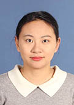

个人简历
2017 南京工业大学 先进化学制造研究院 副教授
2014-2017 新加坡南洋理工大学 航空与宇航学院 博士后
2014-2017 俄罗斯Sportmaster Co., Ltd 先进纺织材料研发中心 研究员
2010-2014 澳大利亚迪肯大学 先进材料研究院（IFM） 博士
2005-2009 北京服装学院 材料科学与工程学院 学士
研究方向
1. 纳米及传统纤维的研究，功能纺织品的开发和工业化应用。
2. 纳米颗粒-有机纤维复合材料的制备和性能研究以及在纺织服装，医疗抗菌，能源材料，磁性材料等领域的应用。
主要成果
在博士期间主要采用静电纺丝技术来制备一维纳米纤维，以及用纳米纤维作为基地制备单晶纳米棒，并实现一维半导体纳米材料在太阳能电池上的应用。在Frontiers of materials science, Materials Chemistry and Physics, Modern Chemistry & Applications等国际期刊上以第一作者发表多篇学术论文。
博士后期间致力于新型纤维材料从实验室研究到工业化的应用：在新加坡EDB, 南洋理工大学和俄罗斯Sportmaster三方支持下搭建纤维织物制备与测试平台； 两项研究产品在高隔热纤维材料领域已经实现工业生产； 纺织品拒水涂层的研究中一项永久防水处理技术获得俄罗斯 O’STIN公司资金支持； 一项“气凝胶/聚合物在纤维织物上的点打印技术”专利及其技术转移；三项高保温纤维材料专利。
小组成员
| 计巧珍(17级硕士) | 胡婷(17级硕士) | 陈秋娴(18级硕士) | ||
|  | ||||
| 辛文文(18级硕士) | 丁立人(18级硕士) | 孙一玮(19级硕士) | ||
| 黄洁(19级硕士) | ||||